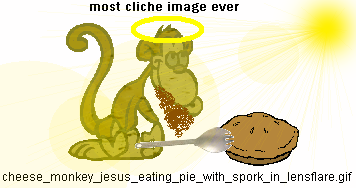

many people buy book because of gimmick or other stupid reason ie. book is romance novel. well when i go on talkr show and people ask me what book about ands i say "well larry kinge that interestes question book is weigh lose manuel and very effective" but as you can see this has limited appeal i need larger audience (larger audience refer to more people and not fat asshoels who weigh 400lbs). so how is possible? cliche appeal chapter! now i can say fantasical thing such as "well tom selleck this graphic novel is about dragon who need to save his burning village but since he is in year 2079 dragons are outlaw and everyone hate and try and kill dragon so the sheriff (play by leslie neilsen) has to catch dragon and put him in jail but by time he track dragon down he fall in love with dragon and they move to appalachian mountain range and live happily ever after as online porno tycoons." so this chapter dedicates to cliche gimmick appeal to sell moer book copy. enjoyr.
